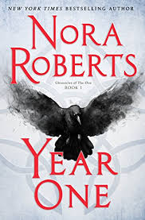

Fahrenheit 451 - Ray Bradbury
Guy Montag is a fireman. His job is to burn books, which are forbidden, being the source of all discord and unhappiness. Even so, Montag is unhappy; there is discord in his marriage. Are books hidden in his house? The Mechanical Hound of the Fire Department, armed with a lethal hypodermic, escorted by helicopters, is ready to track down those dissidents who defy society to preserve and read books.
The Man in the High Castle - Philip K. Dick
The Nazis have taken over New York, the Japanese control California, and the African Continent is virtually wiped out. In a neutral buffer zone in America that divides the world's new rival superpowers, lives the author of an underground bestseller. his book offers a new vision of reality - an alternative theory of history in which the Axis powers were defeated, giving hope to the disenchanted.
The Hitchhiker's Guide to the Galaxy - Douglas Adams
One Thursday lunchtime the Earth gets unexpectedly demolished to make way for a new hyperspace bypass. For Arthur Dent, who has only just had his house demolished that morning, this seems already to be rather a lot to cope with. Sadly, however, the weekend has only just begun. The Galaxy may offer a mind-boggling variety of ways to be blown up and/or insulted, but it's very hard to get a cup of tea.
The Martian - Andy Weir
After a dust storm nearly kills him and forces his crew to evacuate while thinking him dead, Mark finds himself stranded and completely alone. Drawing on his ingenuity, his engineering skills, and a relentless refusal to quit, he confronts one obstacle after another to survive. Will his resourcefulness be enough to overcome the impossible odds?
The Left Hand of Darkness - Ursula K. Le Guin
Two people, until recently strangers, find themselves on a long, tortuous journey across the ice. One is an outcast, forced to leave his beloved homeland; the other is fleeing from a different kind of persecution. What they have in common is curiousity and an almost unshakeable belief that the world can be a better place.

Year One - Nora Roberts
They call it The Doom - a deadly pandemic that starts on New Year's Eve in the Scottish countryside. There's something mysterious about the virus and the way it spreads. As billions fall sick and die, some survivors find themselves invested with strange, unexpected abilities. The old world is over, and Year One has begun.
The First Fifteen Lives of Harry August - Claire North
No matter what he does or the decisions he makes, when death comes, Harry always returns to where he began, a child with all the knowledge of a life he has already lived a dozen times before. Nothing ever changes - until now. As Harry nears the end of his eleventh life, a little girl appears at his bedside. 'I nearly missed you, Doctor August,' she says. 'I need to send a message.' This is the story of what Harry does next, and how he tries to save a past he cannot change and a future he cannot allow.
Provenance - Ann Leckie
A power-driven young woman has just one chance to secure the status she craves and regain priceless lost artefacts prized by her people. She must free their thief from a prison plant from which no one has ever returned.
Cat's Cradle - Kurt Vonnegut
Dr Felix Hoenikker, one of the founding fathers of the atomic bomb, has left a deadly legacy to humanity. He is the inventor of ice-nine, a lethal chemical capable of freezing the entire planet. Writer Jonah's search for Hoenikker leads him to his 3 eccentric children on a Caribbean island where the absurd religion of Bokononism is practised, to love, and to insanity.
Illuminae - Jay Kristoff & Amie Kaufman
The year is 2575 and two mega corporations are at war over a planet that's little more than an ice covered speck. Too bad nobody thought to warn the people living on it. Under fire, Ezra and Kady have to make their escape on the evacuating fleet. A deadly plague breaks out on one of the space ships and it's mutating with terrifying results. As Kady hacks into a web of data to find the truth, only Ezra can help her. The problem, is that they split up before all this started and she isn't supposed to be talking to him.